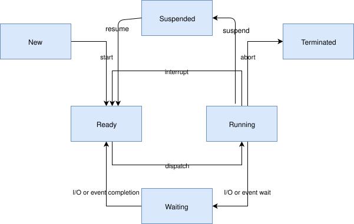
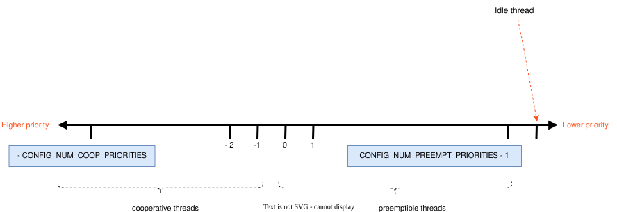

Threads
Note
There is also limited support for using Operation without Threads.
This section describes kernel services for creating, scheduling, and deleting independently executable threads of instructions.
A thread is a kernel object that is used for application processing that is too lengthy or too complex to be performed by an ISR.
Any number of threads can be defined by an application (limited only by available RAM). Each thread is referenced by a thread id that is assigned when the thread is spawned.
A thread has the following key properties:
A stack area, which is a region of memory used for the thread’s stack. The size of the stack area can be tailored to conform to the actual needs of the thread’s processing. Special macros exist to create and work with stack memory regions.
A thread control block for private kernel bookkeeping of the thread’s metadata. This is an instance of type
k_thread.An entry point function, which is invoked when the thread is started. Up to 3 argument values can be passed to this function.
A scheduling priority, which instructs the kernel’s scheduler how to allocate CPU time to the thread. (See Scheduling.)
A set of thread options, which allow the thread to receive special treatment by the kernel under specific circumstances. (See Thread Options.)
A start delay, which specifies how long the kernel should wait before starting the thread.
An execution mode, which can either be supervisor or user mode. By default, threads run in supervisor mode and allow access to privileged CPU instructions, the entire memory address space, and peripherals. User mode threads have a reduced set of privileges. This depends on the
CONFIG_USERSPACEoption. See User Mode.
Lifecycle
Thread Creation
A thread must be created before it can be used. The kernel initializes the thread control block as well as one end of the stack portion. The remainder of the thread’s stack is typically left uninitialized.
Specifying a start delay of K_NO_WAIT instructs the kernel
to start thread execution immediately. Alternatively, the kernel can be
instructed to delay execution of the thread by specifying a timeout
value – for example, to allow device hardware used by the thread
to become available.
The kernel allows a delayed start to be canceled before the thread begins executing. A cancellation request has no effect if the thread has already started. A thread whose delayed start was successfully canceled must be re-spawned before it can be used.
Thread Termination
Once a thread is started it typically executes forever. However, a thread may synchronously end its execution by returning from its entry point function. This is known as termination.
A thread that terminates is responsible for releasing any shared resources it may own (such as mutexes and dynamically allocated memory) prior to returning, since the kernel does not reclaim them automatically.
In some cases a thread may want to sleep until another thread terminates.
This can be accomplished with the k_thread_join() API. This
will block the calling thread until either the timeout expires, the target
thread self-exits, or the target thread aborts (either due to a
k_thread_abort() call or triggering a fatal error).
Once a thread has terminated, the kernel guarantees that no use will
be made of the thread struct. The memory of such a struct can then be
reused for any purpose, including spawning a new thread. Note that
the thread must be fully terminated, which presents race conditions
where a thread’s own logic signals completion which is seen by another
thread before the kernel processing is complete. Under normal
circumstances, application code should use k_thread_join() or
k_thread_abort() to synchronize on thread termination state
and not rely on signaling from within application logic.
Thread Aborting
A thread may asynchronously end its execution by aborting. The kernel automatically aborts a thread if the thread triggers a fatal error condition, such as dereferencing a null pointer.
A thread can also be aborted by another thread (or by itself)
by calling k_thread_abort(). However, it is typically preferable
to signal a thread to terminate itself gracefully, rather than aborting it.
As with thread termination, the kernel does not reclaim shared resources owned by an aborted thread.
Note
The kernel does not currently make any claims regarding an application’s ability to respawn a thread that aborts.
Thread Suspension
A thread can be prevented from executing for an indefinite period of time
if it becomes suspended. The function k_thread_suspend()
can be used to suspend any thread, including the calling thread.
Suspending a thread that is already suspended has no additional effect.
Once suspended, a thread cannot be scheduled until another thread calls
k_thread_resume() to remove the suspension.
Note
A thread can prevent itself from executing for a specified period of time
using k_sleep(). However, this is different from suspending
a thread since a sleeping thread becomes executable automatically when the
time limit is reached.
Thread States
A thread that has no factors that prevent its execution is deemed to be ready, and is eligible to be selected as the current thread.
A thread that has one or more factors that prevent its execution is deemed to be unready, and cannot be selected as the current thread.
The following factors make a thread unready:
The thread has not been started.
The thread is waiting for a kernel object to complete an operation. (For example, the thread is taking a semaphore that is unavailable.)
The thread is waiting for a timeout to occur.
The thread has been suspended.
The thread has terminated or aborted.

Note
Although the diagram above may appear to suggest that both Ready and Running are distinct thread states, that is not the correct interpretation. Ready is a thread state, and Running is a schedule state that only applies to Ready threads.
Thread Stack objects
Every thread requires its own stack buffer for the CPU to push context. Depending on configuration, there are several constraints that must be met:
There may need to be additional memory reserved for memory management structures
If guard-based stack overflow detection is enabled, a small write-protected memory management region must immediately precede the stack buffer to catch overflows.
If userspace is enabled, a separate fixed-size privilege elevation stack must be reserved to serve as a private kernel stack for handling system calls.
If userspace is enabled, the thread’s stack buffer must be appropriately sized and aligned such that a memory protection region may be programmed to exactly fit.
The alignment constraints can be quite restrictive, for example some MPUs require their regions to be of some power of two in size, and aligned to its own size.
Because of this, portable code can’t simply pass an arbitrary character buffer
to k_thread_create(). Special macros exist to instantiate stacks
statically, prefixed with K_KERNEL_STACK and K_THREAD_STACK.
Additionally, stacks may be instantiated dynamically using
k_thread_stack_alloc() and subsequently freed with
k_thread_stack_free().
Kernel-only Stacks
If it is known that a thread will never run in user mode, or the stack is
being used for special contexts like handling interrupts, it is best to
define stacks using the K_KERNEL_STACK macros.
These stacks save memory because an MPU region will never need to be programmed to cover the stack buffer itself, and the kernel will not need to reserve additional room for the privilege elevation stack, or memory management data structures which only pertain to user mode threads.
Attempts from user mode to use stacks declared in this way will result in a fatal error for the caller.
If CONFIG_USERSPACE is not enabled, the set of K_THREAD_STACK macros
have an identical effect to the K_KERNEL_STACK macros.
Thread stacks
If it is known that a stack will need to host user threads, or if this
cannot be determined, define the stack with K_THREAD_STACK macros.
This may use more memory but the stack object is suitable for hosting
user threads.
If CONFIG_USERSPACE is not enabled, the set of K_THREAD_STACK macros
have an identical effect to the K_KERNEL_STACK macros.
Thread Priorities
A thread’s priority is an integer value, and can be either negative or non-negative. Numerically lower priorities takes precedence over numerically higher values. For example, the scheduler gives thread A of priority 4 higher priority over thread B of priority 7; likewise thread C of priority -2 has higher priority than both thread A and thread B.
The scheduler distinguishes between two classes of threads, based on each thread’s priority.
A cooperative thread has a negative priority value. Once it becomes the current thread, a cooperative thread remains the current thread until it performs an action that makes it unready.
A preemptible thread has a non-negative priority value. Once it becomes the current thread, a preemptible thread may be supplanted at any time if a cooperative thread, or a preemptible thread of higher or equal priority, becomes ready.
A thread’s initial priority value can be altered up or down after the thread has been started. Thus it is possible for a preemptible thread to become a cooperative thread, and vice versa, by changing its priority.
Note
The scheduler does not make heuristic decisions to re-prioritize threads. Thread priorities are set and changed only at the application’s request.
The kernel supports a virtually unlimited number of thread priority levels.
The configuration options CONFIG_NUM_COOP_PRIORITIES and
CONFIG_NUM_PREEMPT_PRIORITIES specify the number of priority
levels for each class of thread, resulting in the following usable priority
ranges:
cooperative threads: (-
CONFIG_NUM_COOP_PRIORITIES) to -1preemptive threads: 0 to (
CONFIG_NUM_PREEMPT_PRIORITIES- 1)

For example, configuring 5 cooperative priorities and 10 preemptive priorities results in the ranges -5 to -1 and 0 to 9, respectively.
Meta-IRQ Priorities
When enabled (see CONFIG_NUM_METAIRQ_PRIORITIES), there is a special
subclass of cooperative priorities at the highest (numerically lowest)
end of the priority space: meta-IRQ threads. These are scheduled
according to their normal priority, but also have the special ability
to preempt all other threads (and other meta-IRQ threads) at lower
priorities, even if those threads are cooperative and/or have taken a
scheduler lock. Meta-IRQ threads are still threads, however,
and can still be interrupted by any hardware interrupt.
Note
When a cooperative (or schedule-locked) thread that was preempted by a meta-IRQ thread resumes its execution after the meta-IRQ thread completes, it will be on the same CPU–assuming it was neither suspended nor aborted. This helps ensure that these threads are not unexpectedly shuffled to another CPU while in the midst of querying the properties associated with their own CPU.
This behavior makes the act of unblocking a meta-IRQ thread (by any means, e.g. creating it, calling k_sem_give(), etc.) into the equivalent of a synchronous system call when done by a lower priority thread, or an ARM-like “pended IRQ” when done from true interrupt context. The intent is that this feature will be used to implement interrupt “bottom half” processing and/or “tasklet” features in driver subsystems. The thread, once woken, will be guaranteed to run before the current CPU returns into application code.
Unlike similar features in other OSes, meta-IRQ threads are true threads and run on their own stack (which must be allocated normally), not the per-CPU interrupt stack. Design work to enable the use of the IRQ stack on supported architectures is pending.
Note that because this breaks the promise made to cooperative threads by the Zephyr API (namely that the OS won’t schedule other thread until the current thread deliberately blocks), it should be used only with great care from application code. These are not simply very high priority threads and should not be used as such.
Thread Options
The kernel supports a small set of thread options that allow a thread to receive special treatment under specific circumstances. The set of options associated with a thread are specified when the thread is spawned.
A thread that does not require any thread option has an option value of zero.
A thread that requires a thread option specifies it by name, using the
| character as a separator if multiple options are needed
(i.e. combine options using the bitwise OR operator).
The following thread options are supported.
K_ESSENTIALThis option tags the thread as an essential thread. This instructs the kernel to treat the termination or aborting of the thread as a fatal system error.
By default, the thread is not considered to be an essential thread.
K_SSE_REGSThis x86-specific option indicate that the thread uses the CPU’s SSE registers. Also see
K_FP_REGS.By default, the kernel does not attempt to save and restore the contents of these registers when scheduling the thread.
K_FP_REGSThis option indicate that the thread uses the CPU’s floating point registers. This instructs the kernel to take additional steps to save and restore the contents of these registers when scheduling the thread. (For more information see Floating Point Services.)
By default, the kernel does not attempt to save and restore the contents of this register when scheduling the thread.
K_USERIf
CONFIG_USERSPACEis enabled, this thread will be created in user mode and will have reduced privileges. See User Mode. Otherwise this flag does nothing.K_INHERIT_PERMSIf
CONFIG_USERSPACEis enabled, this thread will inherit all kernel object permissions that the parent thread had, except the parent thread object. See User Mode.
Thread Custom Data
Every thread has a 32-bit custom data area, accessible only by the thread itself, and may be used by the application for any purpose it chooses. The default custom data value for a thread is zero.
Note
Custom data support is not available to ISRs because they operate within a single shared kernel interrupt handling context.
By default, thread custom data support is disabled. The configuration option
CONFIG_THREAD_CUSTOM_DATA can be used to enable support.
The k_thread_custom_data_set() and
k_thread_custom_data_get() functions are used to write and read
a thread’s custom data, respectively. A thread can only access its own
custom data, and not that of another thread.
The following code uses the custom data feature to record the number of times each thread calls a specific routine.
Note
Obviously, only a single routine can use this technique, since it monopolizes the use of the custom data feature.
int call_tracking_routine(void)
{
uint32_t call_count;
if (k_is_in_isr()) {
/* ignore any call made by an ISR */
} else {
call_count = (uint32_t)k_thread_custom_data_get();
call_count++;
k_thread_custom_data_set((void *)call_count);
}
/* do rest of routine's processing */
...
}
Use thread custom data to allow a routine to access thread-specific information, by using the custom data as a pointer to a data structure owned by the thread.
Implementation
Spawning a Thread
A thread is spawned by defining its stack area and its thread control block,
and then calling k_thread_create().
The stack area may be statically allocated using
K_THREAD_STACK_DEFINE or K_KERNEL_STACK_DEFINE to ensure
it is properly set up in memory.
The size parameter for the stack must be one of three values:
The original requested stack size passed to
K_THREAD_STACKorK_KERNEL_STACKfamily of stack instantiation macros.For a stack object defined with the
K_THREAD_STACKfamily of macros, the return value ofK_THREAD_STACK_SIZEOF()for that’ object.For a stack object defined with the
K_KERNEL_STACKfamily of macros, the return value ofK_KERNEL_STACK_SIZEOF()for that object.
Alternatively, the stack area may be dynamically allocated using
k_thread_stack_alloc() and freed using k_thread_stack_free().
The thread spawning function returns its thread id, which can be used to reference the thread.
The following code spawns a thread that starts immediately.
#define MY_STACK_SIZE 500
#define MY_PRIORITY 5
extern void my_entry_point(void *, void *, void *);
K_THREAD_STACK_DEFINE(my_stack_area, MY_STACK_SIZE);
struct k_thread my_thread_data;
k_tid_t my_tid = k_thread_create(&my_thread_data, my_stack_area,
K_THREAD_STACK_SIZEOF(my_stack_area),
my_entry_point,
NULL, NULL, NULL,
MY_PRIORITY, 0, K_NO_WAIT);
Alternatively, a thread can be declared at compile time by calling
K_THREAD_DEFINE. Observe that the macro defines
the stack area, control block, and thread id variables automatically.
The following code has the same effect as the code segment above.
#define MY_STACK_SIZE 500
#define MY_PRIORITY 5
extern void my_entry_point(void *, void *, void *);
K_THREAD_DEFINE(my_tid, MY_STACK_SIZE,
my_entry_point, NULL, NULL, NULL,
MY_PRIORITY, 0, 0);
Note
The delay parameter to k_thread_create() is a
k_timeout_t value, so K_NO_WAIT means to start the
thread immediately. The corresponding parameter to K_THREAD_DEFINE
is a duration in integral milliseconds, so the equivalent argument is 0.
The following code dynamically allocates a thread stack, waits until the thread has joined, and then frees the dynamically allocated thread stack.
extern void my_entry_point(void *, void *, void *);
k_tid_t my_tid;
void *my_stack_area;
my_stack_area = k_thread_stack_alloc(CONFIG_DYNAMIC_THREAD_STACK_SIZE);
my_tid = k_thread_create(&my_thread_data, my_stack_area,
CONFIG_DYNAMIC_THREAD_STACK_SIZE,
my_entry_point,
NULL, NULL, NULL,
MY_PRIORITY, 0, K_NO_WAIT);
k_thread_join(my_tid, K_FOREVER);
k_thread_stack_free(my_stack_area);
User Mode Constraints
This section only applies if CONFIG_USERSPACE is enabled, and a user
thread tries to create a new thread. The k_thread_create() API is
still used, but there are additional constraints which must be met or the
calling thread will be terminated:
The calling thread must have permissions granted on both the child thread and stack parameters; both are tracked by the kernel as kernel objects.
The child thread and stack objects must be in an uninitialized state, i.e. it is not currently running and the stack memory is unused.
The stack size parameter passed in must be equal to or less than the bounds of the stack object when it was declared.
The
K_USERoption must be used, as user threads can only create other user threads.The
K_ESSENTIALoption must not be used, user threads may not be considered essential threads.The priority of the child thread must be a valid priority value, and equal to or lower than the parent thread.
Dropping Permissions
If CONFIG_USERSPACE is enabled, a thread running in supervisor mode
may perform a one-way transition to user mode using the
k_thread_user_mode_enter() API. This is a one-way operation which
will reset and zero the thread’s stack memory. The thread will be marked
as non-essential.
Terminating a Thread
A thread terminates itself by returning from its entry point function.
The following code illustrates the ways a thread can terminate.
void my_entry_point(int unused1, int unused2, int unused3)
{
while (1) {
...
if (<some condition>) {
return; /* thread terminates from mid-entry point function */
}
...
}
/* thread terminates at end of entry point function */
}
If CONFIG_USERSPACE is enabled, aborting a thread will additionally
mark the thread and stack objects as uninitialized so that they may be reused.
Runtime Statistics
Thread runtime statistics can be gathered and retrieved if
CONFIG_THREAD_RUNTIME_STATS is enabled, for example, total number of
execution cycles of a thread.
By default, the runtime statistics are gathered using the default kernel
timer. For some architectures, SoCs or boards, there are timers with higher
resolution available via timing functions. Using of these timers can be
enabled via CONFIG_THREAD_RUNTIME_STATS_USE_TIMING_FUNCTIONS.
Here is an example:
k_thread_runtime_stats_t rt_stats_thread;
k_thread_runtime_stats_get(k_current_get(), &rt_stats_thread);
printk("Cycles: %llu\n", rt_stats_thread.execution_cycles);
Suggested Uses
Use threads to handle processing that cannot be handled in an ISR.
Use separate threads to handle logically distinct processing operations that can execute in parallel.
Configuration Options
Related configuration options: